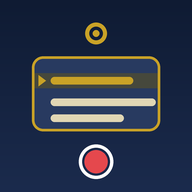

NaCenaToque no botão para ligar a câmera e o microfone.
Procure o pontinho escuro da lente frontal, na moldura do aparelho, e toque na borda da tela mais perto dela. O texto vai ficar colado na lente, para o seu olhar parecer natural. Isso é feito uma vez só neste aparelho.
Na janela de compartilhar, escolha Salvar vídeo para ele ir para o app Fotos.